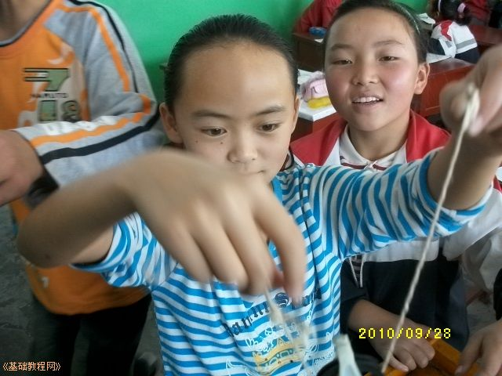

教育科学出版社 六年级(上)《科学》教学实验设计
作者：TeliuTe 来源：基础教程网
五、滑轮 返回目录 下一课1、材料：滑轮、粗棉线、砝码(2)、教师准备一个铁架台
2、操作：先演示定滑轮，一边一个砝码，再组装滑轮组，一边四个砝码，另一边只需两个，得出省一半力的结论，
学生没有铁架台，一个滑轮，一根棉线，两个砝码，试一下定滑轮

3、小结：借中学物理实验室的器材，滑轮只够一套，不用测力计，用砝码来观察省力，条件许可可以实验教师的，虽然滑轮组是下一课的
4、板书：
第5课 滑轮
1、滑轮：是由轮、轴和线绳组成的机械
2、种类：定滑轮和动滑轮
3、定滑轮可以改变方向，不省力，动滑轮省一半力
本教程由86团学校TeliuTe制作|著作权所有
基础教程网：http://teliute.org/
美丽的校园……
转载和引用本站内容，请保留版权信息和本站链接。